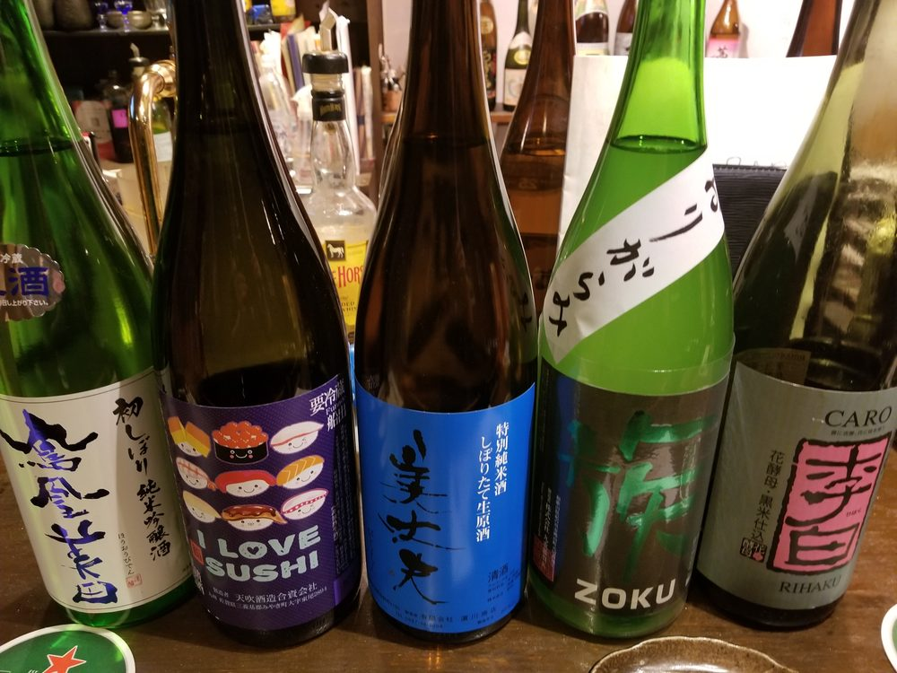
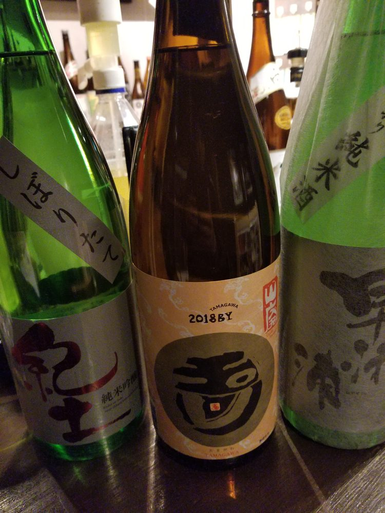
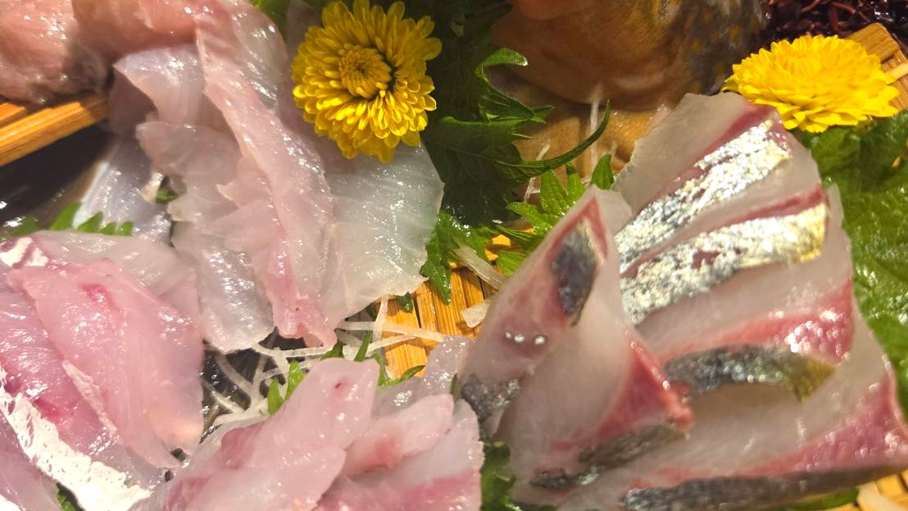

新潟・糸魚川から直送の魚を、
魚串と鯛出汁で
新潟糸魚川直送 鯛出汁と魚串の海鮮居酒屋 魚串BAR（サカナクシバル）の、魚と鯛出汁のご案内です。
📞 電話で予約 090-6530-7591ネットで予約リクエスト
- 新潟・糸魚川から直送
- 魚串は1本から
- 鯛出汁しゃぶ
- 日本酒・焼酎
- 全席喫煙可
魚のこと
魚は、新潟・糸魚川から直送しています。届いた魚を、お造りや魚串などでお出しします。焼き串・揚げ串は1本から注文できるので、いろいろな魚を少しずつ楽しめます。
鯛出汁のこと
鯛の骨からとった鯛出汁を、しゃぶしゃぶ・茶碗蒸し・〆の鯛出汁ラーメンでどうぞ。
お酒
日本酒・焼酎も取りそろえています。すべてのコースの90分飲み放題に、日本酒（地酒）も含まれます。


新潟県の公式ページに載っています
新潟県大阪事務所の「関西にある新潟ゆかりのお店」（新潟県産品が味わえる飲食店）に掲載されています。

よくある質問
どこの魚を使っていますか？
新潟・糸魚川から直送の鮮魚です。
鯛を使った料理はありますか？
はい。鯛の骨からとった鯛出汁を使った、鯛出汁しゃぶ、鯛出汁茶碗蒸し、〆の鯛出汁ラーメンなどをご用意しています。
日本酒はありますか？
はい。日本酒・焼酎も取りそろえています。すべてのコースの90分飲み放題に、日本酒（地酒）も含まれます。
一人でも入れますか？
はい。カウンター7席があり、お一人様歓迎です。魚串は1本から注文できます。
お客様の口コミ
実際にご来店いただいたお客様の口コミは、Googleマップでご覧いただけます。
場所と営業
- 営業時間
- 月〜木 18:00〜24:00（L.O. 23:30）
金・土・祝前日 18:00〜翌1:00（L.O. 24:00） - 定休日
- 日曜・祝日。年末年始は12/31〜1/5（1/6から営業）
- 場所
- 大阪市中央区心斎橋筋2-3-5 日宝ファインプラザ1F
なんば駅 徒歩4分／心斎橋駅 徒歩6分 - 喫煙
- 全席喫煙可（禁煙席なし）。20歳未満の方はご入店いただけません。